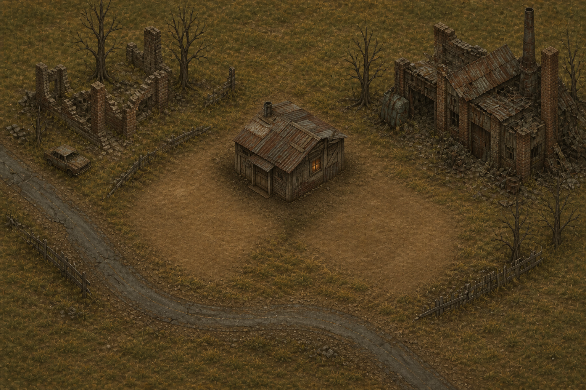
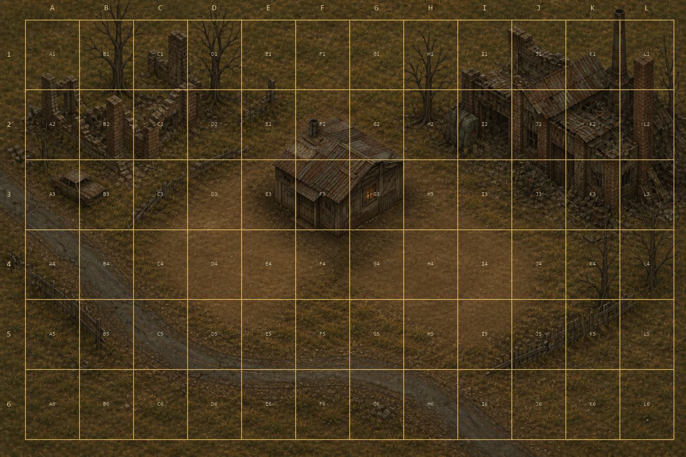
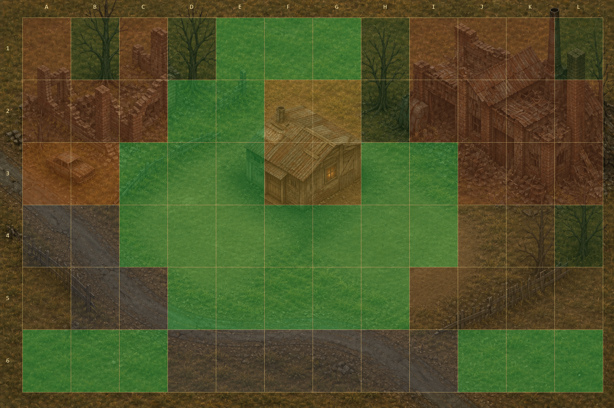
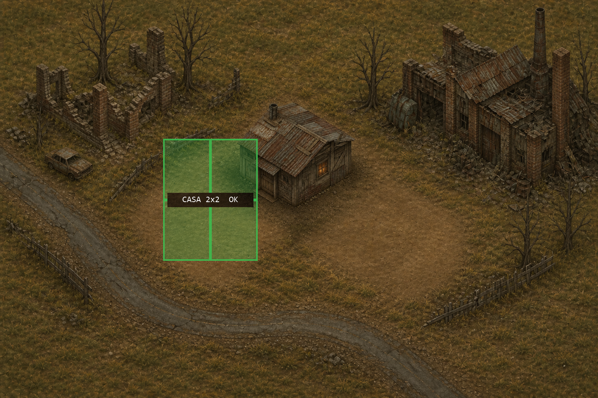
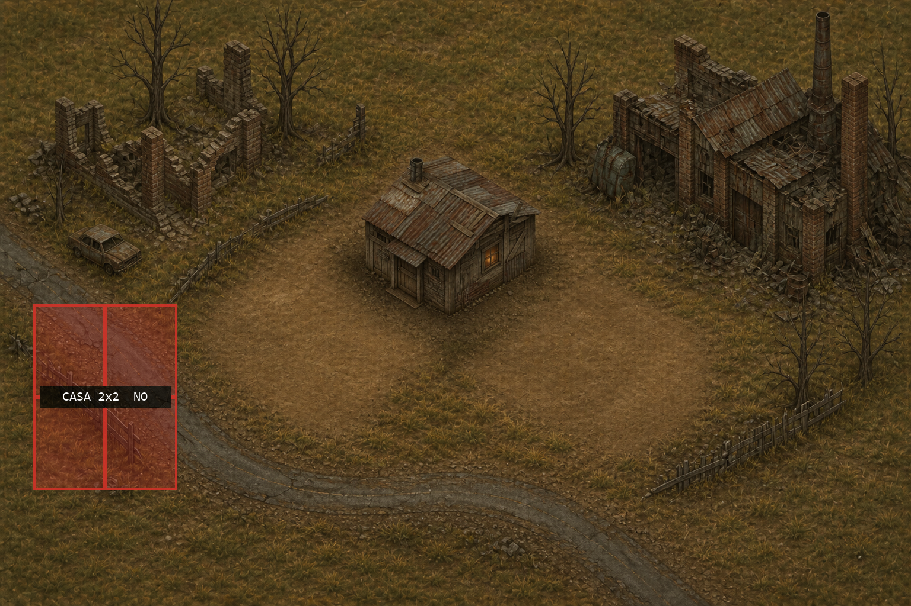

Escena piloto · arte primero, rejilla después
DEBUG interno. El jugador solo vería la imagen limpia. No está integrado en el juego.

1. Imagen limpiaSin grid. HQ, carretera, árboles, coche, ruinas, dos explanadas.

2. DEBUG A1–L6Solo para diseño. Nunca en partida.

3. Tint de ocupaciónVerde = edificable (28 celdas: hierba limpia también). Rojo = bloqueo. Gris = carretera.

4. Casa 2×2 válidaAncla D3 · celdas D3 E3 D4 E4.

5. Casa 2×2 inválidaAncla A4 · pisa carretera y valla.